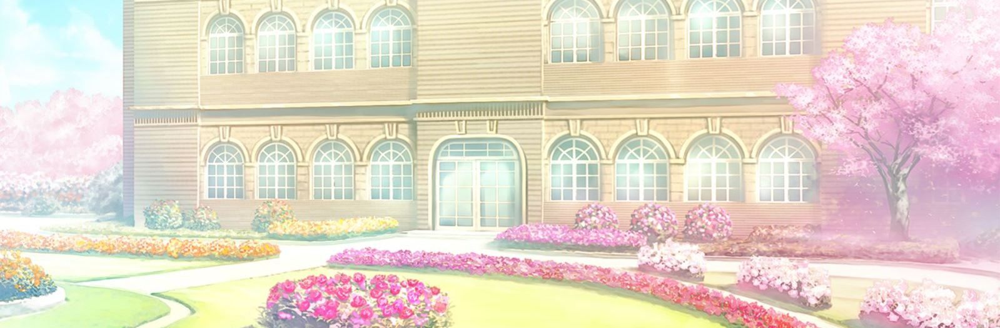
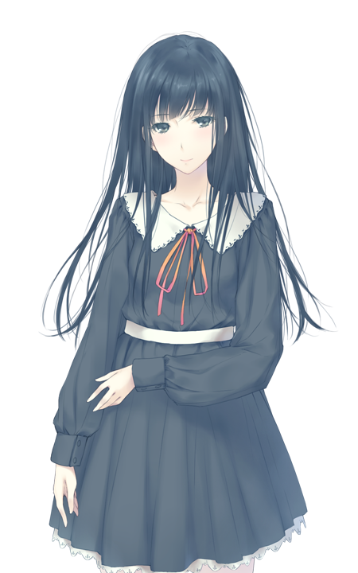
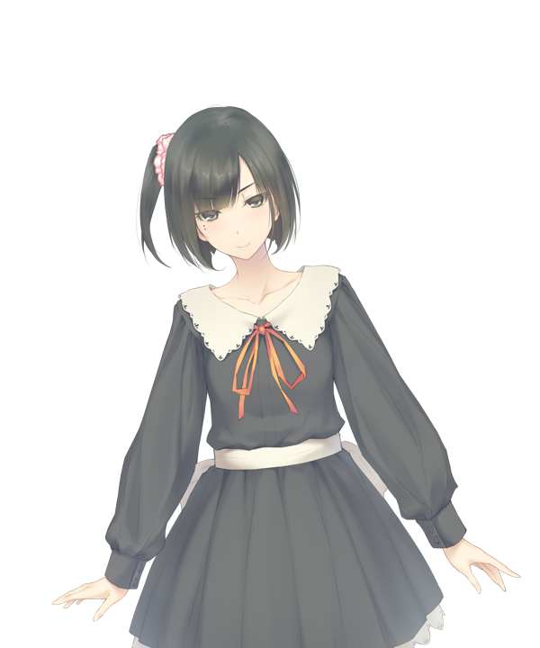
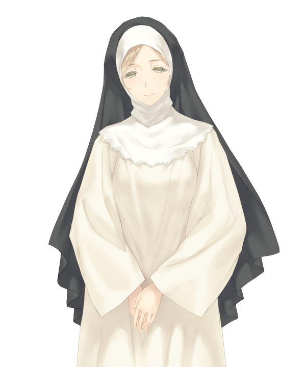
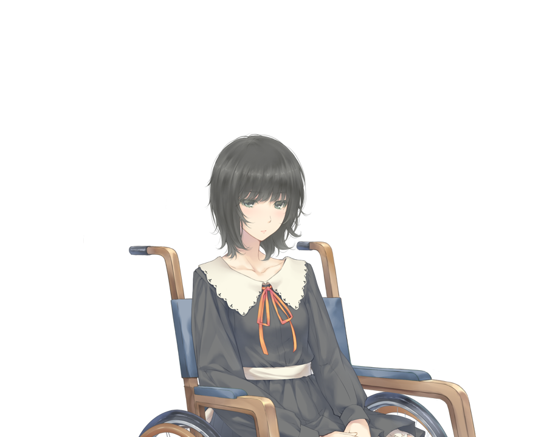

TOP
白羽 苏芳
匂坂 真由理
花菱 立花
沙沙贵 莓
沙沙贵 林檎
八代 让叶
小御门 奈莉奈
黛莉亚 巴斯奎亚
轮椅少女
FLOWERS -Le volume sur printemps-
开发商：
Innocent Grey
游戏类型：解密
ADV
故事发生在被四壁高墙环绕和深幽森林包围的教会学校 圣彗星兰学院（聖アんグレカム学院）
心负创伤的少女 白羽苏芳，来到这所妍丽少女们云集的学院入学
由学院暂定分配好的人生初见之友，苏芳对她们悄然萌生了花非花雾非雾般朦胧的恋心...
本作中一大特色是每一位少女的名字都包含了一种花，而花语也反映了她们的性格特点

圣彗星兰学院
聖アんグレカム学院
故事的舞台，为三年制的宗教系女校。
彗星兰
的花语为“祈祷”；“永远与你相伴”。
主要角色

白羽 苏芳（しらはね すおう）
cv（
名冢佳织
）
本作的主人公
由于家庭的原因之前都与祖父同住，
从未体验过校园生活的她又会迎来怎么样的邂逅呢
爱好：文学，电影鉴赏
紫荆
:
花语为高贵；朴素；背叛；疑惑；觉醒
匂坂 真由理（こうさか まゆり）
cv冈本理绘
性格开朗乐观，是班级的中心
也是深藏不露的努力家，一旦下定决心，往往会取得令人惊叹的成果
苏芳的amitie之一
爱好：制作点心，绘画鉴赏
百合
:
花语为威严；纯洁；愉快
花菱 立花（はなびし りっか）
cv（明岛ゆうり）
性格严肃认真，温柔体贴
苏芳的amitie之一
爱好：收集红茶，举办茶会
花菱草
:
花语为请实现我的愿望；请不要拒绝我

沙沙贵 莓（ささき いちご）
cv（
长妻树里
）
双胞胎中的姐姐，性格开朗
好奇心旺盛的麻烦制造者
爱好：时髦物品，收集青蛙装饰
草莓花
:
花语为尊敬与爱
沙沙贵 林檎（ささき りんご）
cv（
长妻树里
）
双胞胎中的妹妹，稳重的性格与姐姐完全相反
虽然平时表现得懒散，
但遇到怪谈逸文时就会表现出不同的一面
爱好：读书和鬼故事
苹果花
:
花语为名声；选择；评判；被选择的恋情
八代 让叶（やつしろ ゆずりは）
cv（
瑞沢渓
）
二年级的前辈，学院自治组织-尼西亚会会长
谈吐举止比较奇怪但并不令人反感
虽身为料理部部员，但技术很糟糕
爱好：体育和摄影
交让木
:
花语为返老还童；世代交替
小御门 奈莉奈（こみかど ねりね）
cv（西口有香）
二年级，学院自治组织 尼西亚会副会长
虔诚的天主教徒，温和善良
虽然喜欢聊天，
但因为超凡脱俗的美貌让其他人望而却步
爱好：收集恐怖故事，甜食
根希百合
:
花语为华丽；幸福的回忆；忍耐

黛莉亚 巴斯奎亚（ダリア バスキア）
cv（高城みつ）
学院的教师兼修女,稳重、富有包容力
相较于圣母，更像仪表大方的姐姐
在宗教方面绝不让步，
但在其他事情上会稍稍通融
精通古典芭蕾，并在学院里教授芭蕾课
大丽花
:
花语为见异思迁；华丽；威严；不稳定

轮椅少女
cv（
佐仓绫音
）
????